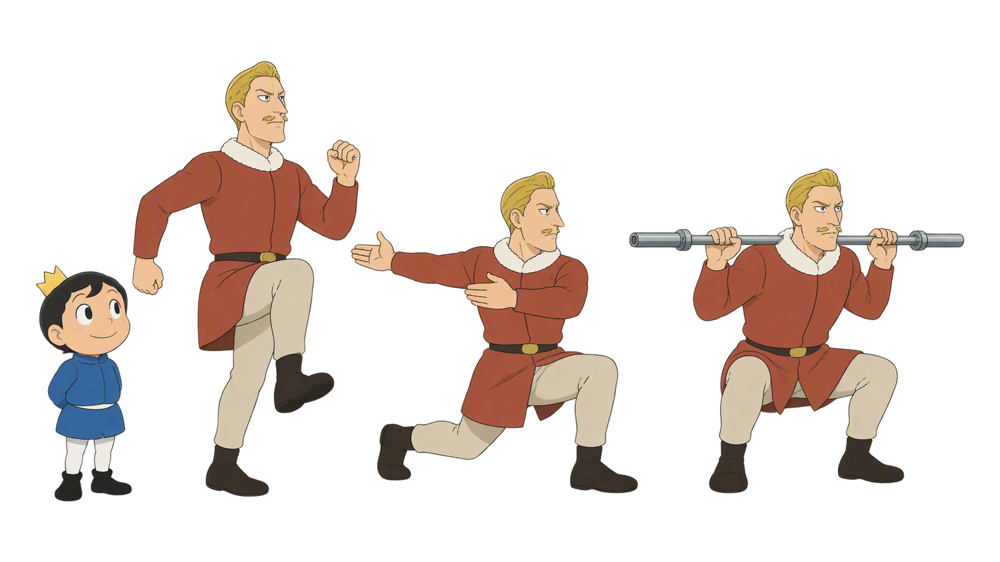
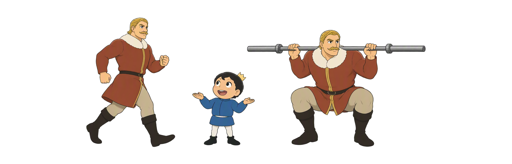
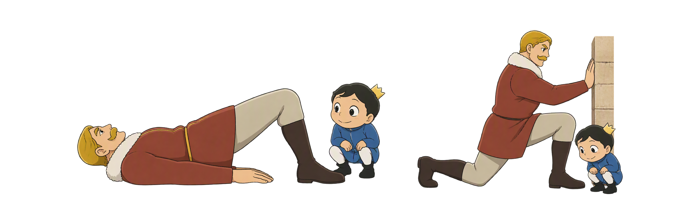
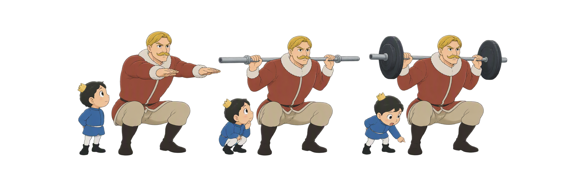
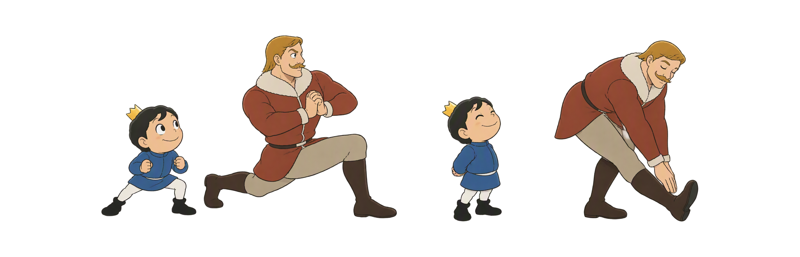

Day 48
热身不是随便动一动
先升温 · 再激活 · 后专项 训练后慢降，恢复看长期
RAMP热身专项准备整理恢复

先升温 · 再激活 · 后专项 训练后慢降，恢复看长期
六个步骤从全身升温到专项渐进，再把强度平稳降下；每一步都以今天的动作和你的状态为准。
先准备 · 再排练
升温 · 提高心率
激活 · 动态活动
渐进 · 接近任务
动态在前 · 静态在后
慢降 · 看长期
疼痛、肿胀、眩晕、胸闷或控制持续变差时先停止；恢复工具不能替代睡眠、营养和合理负荷。
一般热身把全身从静止状态带起来；专项热身再排练今天真正会做的动作。两步接起来，才能既有准备又不提前疲劳。

Raise 的任务是用轻松连续的活动把身体渐渐带热，而不是先把自己冲累。用呼吸、控制和当天感觉决定什么时候进入下一步。
激活让目标肌群和稳定策略参与，动态活动让关节在可控范围内移动。两者都是为了让下一步动作更稳，不是为了追求酸胀或极限幅度。

Potentiate 是用渐进的专项准备把身体接到工作组：动作更像、负荷更近，但始终留出开始正式训练的力量和注意力。

动态和静态拉伸不是非黑即白：训练前要让动作接回任务，训练后可以在舒适范围整理。区别在时机、强度和你下一步要做什么。

整理让训练从高强度平稳收尾；恢复工具可以辅助感受，但真正决定恢复的是睡眠、进食、补水和之后的训练负荷。